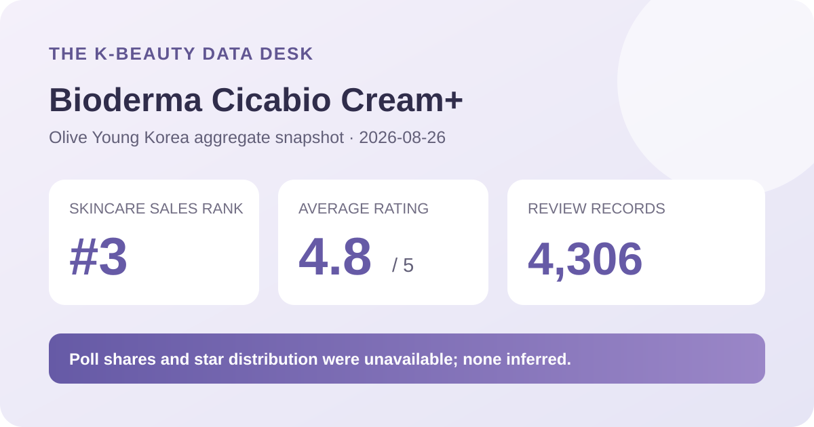
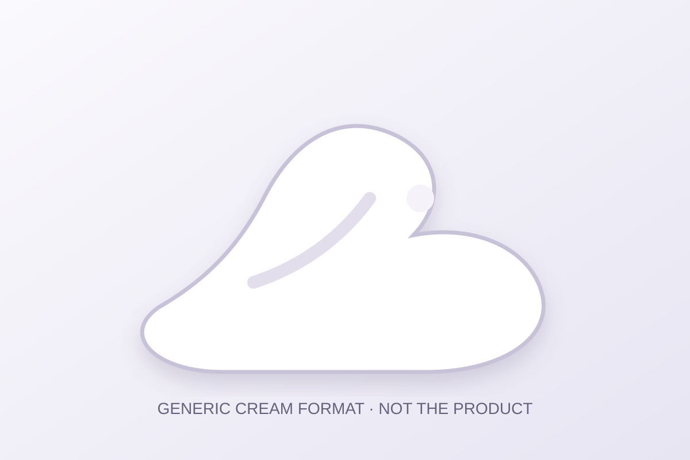

Data captured August 26, 2026. This article uses only the retailer's displayed product title, sales rank, aggregate rating, review count, category labels, and dated price display. No individual review, reviewer name, product photograph, or user photograph is reproduced or translated. I did not test the product.

The short version: Bioderma Cicabio Cream Plus ranked third in the captured skincare sales list and displayed 4.8 out of 5 from 4,306 linked review records. The score is useful retail context, but it cannot prove hydration, redness reduction, repair, gentleness, or fit.
A 4.8 average across several thousand linked records is a substantial retail signal. It shows that the rating pool collectively sits near the top of a five-point scale, and it is less fragile than a launch average based on a handful of entries. It is reasonable to describe the captured retailer feedback as broadly positive.
The number still compresses different experiences into one value. The page did not expose a reliable split for five, four, three, two, and one stars, so the average cannot tell us how ratings cluster. Many distributions can round to 4.8. This analysis therefore reports the average and denominator without manufacturing a five-star share.
The review area also indicated that linked feedback may come from items with the same contents but different volume, set configuration, gifts, or packaging. The 4,306 count should be understood as a connected product-review pool, not necessarily feedback written only for the exact double promotion displayed on capture day.
A category label without a valid share cannot support a comparison. This post does not claim that dry-skin reviewers formed a particular proportion, that shoppers experienced more moisture, or that the cream was gentle. It also does not reconstruct missing shares from individual reviews. The labels are documented only to explain why the usual poll analysis is absent.

The retailer places the item in its cream category. That supports a format label, not a firsthand sensory description. I did not open or apply it, so this analysis cannot confirm color, scent, density, spread, tack, absorption time, residue, pilling, or compatibility with sunscreen and makeup.
The visual above is deliberately brand-neutral. If finish matters, test the actual formula in the routine and climate where it will be used. Amount, waiting time, underlying layers, sunscreen film, makeup, temperature, and humidity can all affect the result.
Rank three describes recent sales prominence inside one retailer and one category at one time. It does not mean third-best for every shopper. Ranking can be shaped by launch timing, discounts, prominent placement, inventory, gifts, advertising, and live-shopping events. The captured page advertised a double set and multiple gift notices, which are relevant commercial context.
Rank and review volume answer different questions. The rank reflects recent momentum; the 4,306-record pool reflects accumulated feedback linked to the product family. Neither identifies why shoppers scored the item as they did, and neither turns a marketing claim into a measured outcome.
The listing showed a ₩50,500 reference price and a ₩38,200 sale display for the 100 ml double promotion, with a displayed basis of ₩19,100 per 100 ml. These are dated storefront figures, not a permanent price guarantee. Gifts, coupons, stock, seller, and checkout totals can change.
Before comparing value, confirm whether “double” means two full 100 ml units in the selected option, the exact total volume, expiry information, return terms, shipping, and the regional label. A larger set can lower the displayed unit price while increasing waste risk if it will not be used in time.
This analysis did not independently capture and reconcile a complete current ingredient list across linked sizes and regions. It does not estimate ingredient percentages or claim that the cream is fragrance-free, alcohol-free, non-comedogenic, pregnancy-compatible, or appropriate for eczema, rosacea, acne, allergy, or another medical concern. Check the current package for the market and item you receive.
The names “Cicabio” and “Cream+” are identifiers, not proof that the product repairs tissue, reduces inflammation, heals injury, or changes a clinical condition. A high retail average cannot establish those outcomes. Seek qualified advice when a known condition, allergy, broken skin, or active treatment makes the decision higher stakes.
It is a substantial descriptive retailer average because 4,306 linked records were displayed. It is not a clinical result, and the missing distribution limits deeper interpretation.
The poll named dry skin but rendered the share as 0%, so this analysis does not use that panel as evidence of suitability.
Not necessarily. The review area noted that linked feedback can span the same contents with different volumes, sets, gifts, or packaging.
No. It is a generic format visual, not a product or user photograph and not evidence from testing.
Bioderma Cicabio Cream Plus was the highest-ranked valid unpublished candidate after the covered rank-one item and the previously covered Hydrabio product family at rank two were skipped. Ranking and product titles matched, and the header and review tab agreed on 4.8 stars and 4,306 records.
The defensible conclusion is positive but limited: the product has an established, high-scoring retail feedback pool and strong current sales visibility. The source did not provide reliable poll shares or a star distribution, so this article does not invent them. Verify the exact pack, current label, price, and personal tolerance independently.
← All reviews · Rankings · Skin-poll guide · Methodology
Published by The K-Beauty Data Desk · Aggregate data captured 2026-08-26. No individual review, name, product photo, or user photo is reproduced or translated, and I did not test the product. I received no free product and am not paid or approved by the brand. Check the dated source listing.